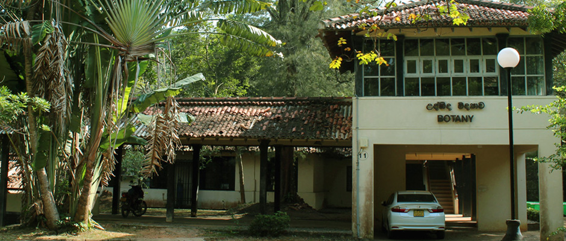
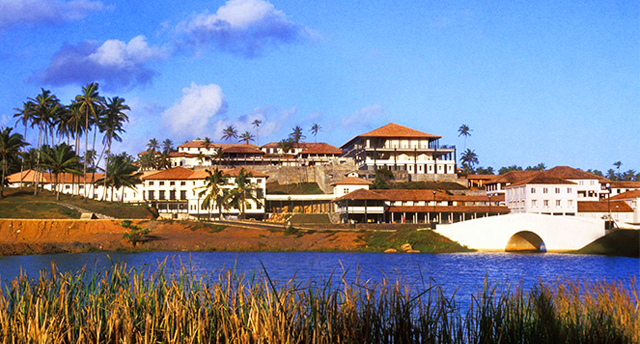
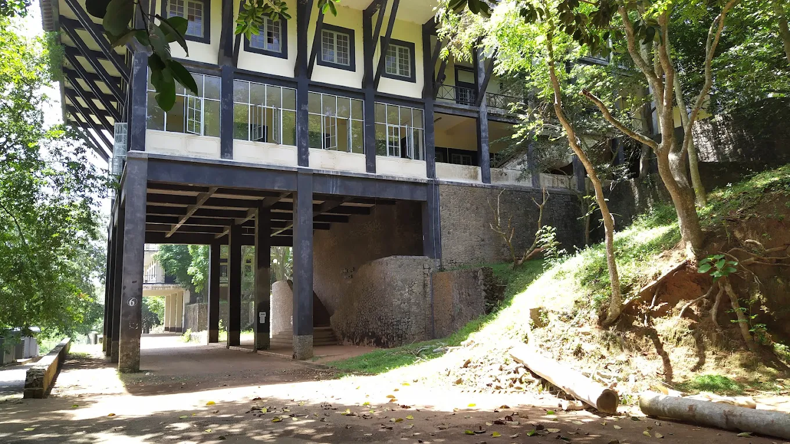
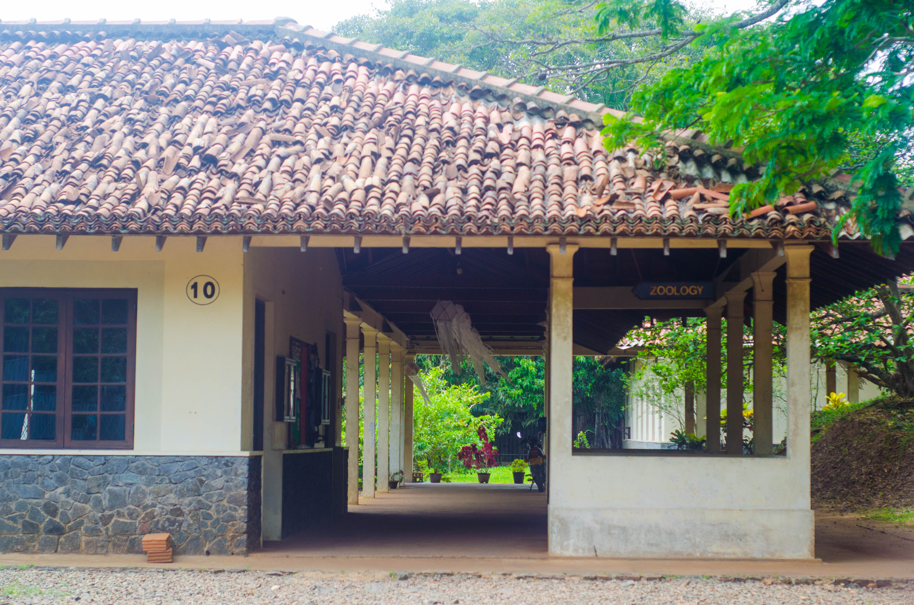

Department of Botany
About
The Department of Botany conducts courses in all major fields of Botany for B.Sc. General and Special Degree programs. Research facilities are offered for M.Sc., M.Phil., and Ph.D. degrees.
Head of Department:
Prof. K. A. Sunanda Kodikara Arachchi
Undergraduate Courses
- B.Sc. General Degree
- B.Sc. Special Degree
Postgraduate Courses
- MSc in Botany
Research Areas
- Plant Ecology & Biodiversity
- Agricultural Botany
- Seed Biology
- Plant-Soil Interactions
Department of Chemistry

About
The Department of Chemistry offers high quality B.Sc. General and Special Degrees and challenging learning opportunities in fundamental, advance, practical and applied Chemistry. Facilities include five teaching laboratories and two advanced laboratories, a well-equipped special equipment room and also a computer room with Internet and E-mail facilities.
Head of Department:
Prof. (Mrs) W. S. Hemalika
Undergraduate Courses
The Department conducts comprehensive courses in Chemistry for B.Sc, B.Sc.(Honours) Study Program students.
- B.Sc. General Degree
- B.Sc. Special Degree
Postgraduate Courses
The Department offers opportunities for students to pursue postgraduate studies and research, through courses and research conducted by the postgraduate institute of science.
- MSc in Analytical Chemistry
Research Areas
- Synthetic Medicinal chemistry
- Natural Product Chemistry
- Metal-metal interactions in covalently linked transition metals and their photochemical activity
- Environmental chemistry
- Photochemistry
- Chemical sensing
- Reactive oxygen species of atmospheric interests
- Spectrophotometric methods for trace-level ion determination
- Coconut shell-based charcoal production and adsorptive enhancement
- Development of Kirkwood-Buff-based force fields for solutions
- Colligative properties at high concentrations
- Stability of bio-molecules in solvent co-solvent media
- Interaction of Ca(II), Mg(II) and Sr (II) with metallo-chromic indicators in binary solvent systems
- Dynamics and Magnetic properties of transition metal clusters
- Production of pure silicon from rice hulls
- Seawater desalination for drinking and cleaning
- Structural and optical properties of transition metal complexes
Department of Computer Science
About
The Department of Computer Science delivers courses in programming, algorithms, data structures, software engineering, and artificial intelligence for undergraduate and postgraduate students. Currently the department offers undergraduate programs, postgraduate programs and training programs. The department provides external courses for the outside society. The department features multiple computer labs with high-speed internet, a server room, smart classrooms, and collaborative spaces for student projects and research.

Head of Department:
Prof. (Mrs.) W. A. Indika
Undergraduate Courses
The department disseminates it's knowledge for Computer Science and Physical Science students through this degree programs.
- BCS General Degree
- BCS Special Degree
- B.Sc. General Degree
- B.Sc. Special Degree
Other Courses
- Computer Literacy Course (CLC) Program
- Certificate Course in Computer Technology
- ICT Skills in Higher Education(CCPDHE Program)
Research Areas
- Text mining, text classification, data mining, rule extraction, and knowledge representation using machine learning
- Intelligent Information Retrieval
- Conceptual Modelling, Process Modelling and Process Patterns, Formal Specification of Processes, e-Commerce Standardization, Service Oriented Computing
- Network Monitoring and Acquiring and Managing Information
- E-commerce information systems development, Model-drivers design, Goal, Business & service Modelling
- Computational Geometry, Computer Graphics programming, Design and analysis of Algorithms, Graph Theory
- Computational Systems Biology, Bioinformatics, Modelling and Simultation, Neural Computing, Stochasting Modelling
- Knowledge engineering ,Business Process Modeling and Business Rule modeling with application to problems in healthcare domain
- Embedded Systems, reconfigurable computing, machine learning, Bio-Informatics
- Knowledge Representation, Ontology, Semantic Web, Ontology Engineering, Mobile Applications
Department of Mathematics
About
The Department offers a wide range of courses in Mathematics, Industrial Mathematics and Applied Mathematics as main subjects for students enrolled in B.Sc. General and Special Degree programs. In addition, there is a new four-year undergraduate honours degree program in Financial Mathematics and Industrial Statistics. Postgraduate research is available in data analysis, statistical modeling, and computational techniques, leading to M.Sc., M.Phil., and Ph.D. degrees. Facilities include a mathematics resource center, seminar halls, a computer-aided mathematics lab, and a departmental library with access to international journals.

Head of Department:
Prof. B. G. Sampath A. Pradeep
Undergraduate Courses
- B.Sc. General Degree
- B.Sc. Special Degree
- BScHons (FinMaths & IndusStat)
Postgraduate Courses
- MSc in Data Science and Statistics
Research Areas
- Applications of partial differential equations
- Probability and Statistics
- Industrial applications of statistics
- Multivariate analysis techniques
- Financial mathematics
- Survival analysis
- Actuarial science
- Mathematical biology
- Mathematical modeling with delay differential equations
- Epidemiological and virus dynamic models
- Operational research
- Complex systems and Networks
- Semigroup theory and their applications in population dynamics
- Quantum computation and information
Department of Physics
About
The Department of Physics provides courses in all majorfields of Physics for B.Sc. General and Special Degree students. In addition, research facilities are offered to those students seeking postgraduate qualifications. The department has three large teaching laboratories, well equipped electronic laboratory, well equipped research laboratory, two lecture theaters and a mini auditorioum.
Head of Department:
Dr. H. A. D. Saranga Dilruk Perera
Undergraduate Courses
- B.Sc. General Degree
- B.Sc. Special Degree
Research Areas
- Semi-conducting materials
- High Energy Physics
- Electronic and ionic conductivity mesurements of inorganic compounds
- Modeling of ocean optical properties
- Processing and Analysis of Remotely sensed data of ocean waters
- Semiconductor particulate systems for evaluation of H2, O2 and NH3
- Deposition of thin films including semiconducting thin films and studies of their properties
- Fabrication and characterization of CdS/CdTe Solar Cells
- Energy saving devices
- Acoustics
- Lightening Physics
- Instrumentational Physics
- Semiconducting Nanostructures
- Astronomy
- Magnetic Resonance Imaging
- Astrobiology
Department of Zoology
About
The Department of Zoology offers comprehensive courses covering basic and applied fields of Zoology for undergraduate students registered for B.Sc. General Degree and B.Sc. Special Degree programs and has specialized academics in the fields of Aquatic Ecology, Fish Biology and Fisheries, Entomology, Animal Physiology, Genetics & Molecular Biology. The department has well equipped three research laboratories, instrument room, animal house, and indoor/ outdoor fish-ponds (including indoor flow-through system) and a computer room to facilitate full time or part time post-graduate studies leading to M. Phil and/or Ph.D.
Head of Department:
Dr. H. A. D. Saranga Dilruk Perera
Undergraduate Courses
- B.Sc. General Degree
- B.Sc. Special Degree
Research Areas
- Animal Ecology
- Animal Parasitology
- Aquatic Ecology
- Biodiversity Conservation and Management
- Chronic Kidney Disease (CKDu)
- Biodiversity and Animal Physiology
- Embryology
- Entomology
- Molecular Biology and Genetics
- Environmental Toxicology
- Ornithology
- Fisheries & aquaculture
- Plant nematology
- Ichthyology
- Vector-borne & Zoonotic Diseases
- Animal taxonomy and diversity
- Malacology
- Animal Interactions
- Mammalian Reproductive Biology